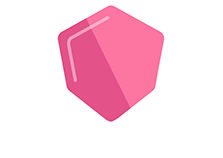
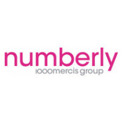

Thomas Ecuer, Software Engineer
Table of Contents
Welcome
Hi! I'm Thomas, a french software engineer. I currently live in Paris.
I like to solve problems involving computers and software, especially those running under Linux.
Work Experiences
Tradelab (Nov 2018)

Tradelab is a programmatic marketing platform, mainly operating in the Real Time Biding field.
- Hired as a DevOps @Infrastructure & services
- Working on PaaS features, software architecture and Linux related issues
- Docker, Jenkins
- Infrastructure/security missions
1000Mercis/Numberly Group (Jan 2016 - Oct 2018)

- Python developer
- Joined a small team (2-5)
- Python and security best practices
- SQL (SQL-Server), mongoDB
Numberly (1000Mercis group) is a marketing agency focused on data collection, Customer Relationship Management, Real Time Biding and some others ways to increase digital impact.
This experience was very interesting on various aspects. At Numberly, I've discovered how it feels to work with various (non tech) profiles, and surprisingly, I've enjoyed it a lot.
—
Initially hired as a Python Developer, I've mostly worked on a Python HTTP API designed to gather personal data, used in many contexts (Websites, online mini-games, applications…)
I've worked on several topics within this perimeter. So far, my favourite one was about optimizing legacy Python code heavily used in production. After a few but anxiety-prone bugs, we managed to divide the load of a whole cluster by 3, and we were pretty happy about it.
Then, I've increased my perimeter and also had opportunities to help with production system's reliability and information/infrastructure security.
OVH (May-Oct 2015)
OVH is a French hosting company
- It was my last internship
- Perl/Python oriented
- I also used AngularJS
- Linux environments
At OVH, I've learned what a "pretty big" infrastructure is, and what it involves to keep it up and running. Also, handling a lot of services, including legacy ones, at scale is hard - software lifecycle is a real challenge, as well as development itself.
The people there were the most brilliant I've ever met so far, and I've never learned as much in a short window of time.
Interests
I enjoy programming a lot. I have professional experiences with Python (2.7+) and still prefer Python for various personal projects. The same applies to shell scripting on Linux, but I'm not enjoying that as much as Python :)
I also use Ansible, have a daily use of Git and Linux. I find my accidental and limited knowledge of Linux very useful in a professional context involving Linux boxes.
On a more personal touch, I enjoy programming in `Rust` in my spare time, and stupid and/or useless projects. See my github for non pertinent stuff :')
I'm interested by distributed systems, applications and workloads - like discovering and understanding how a database fits into the CAP theorem, for instance.
This leads me to learn Elixir (and a little bit of Erlang too) with OTP on my spare time - I found these concepts and mechanics very interesting, as well as the functional paradigm.
I also like bonsaïs, internet culture, video-games and hacking.